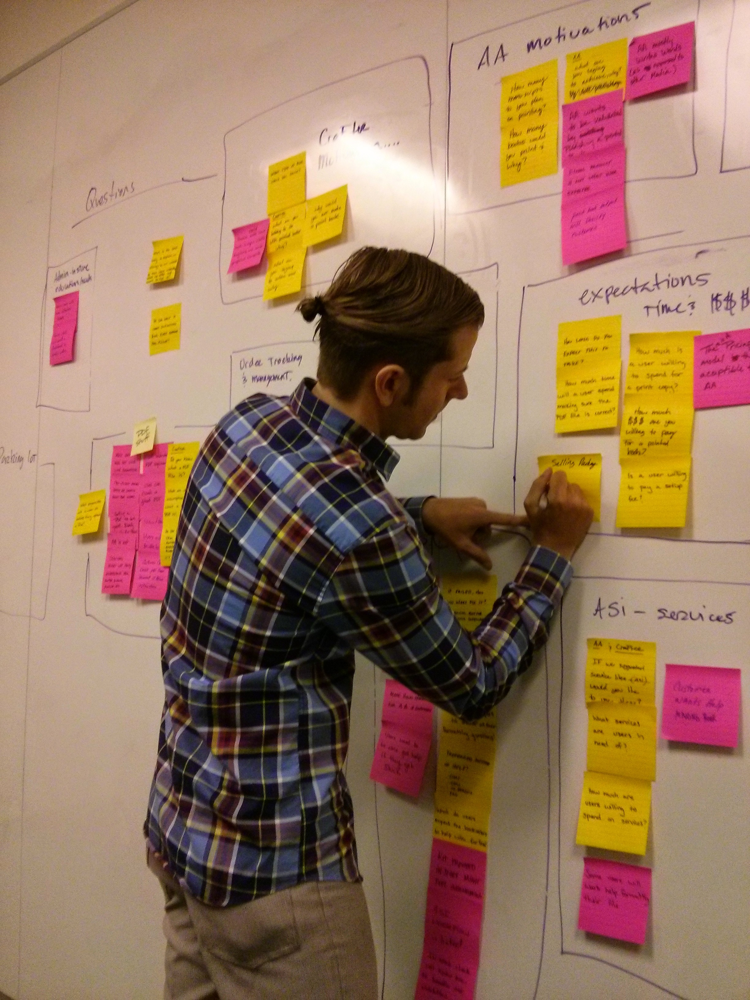
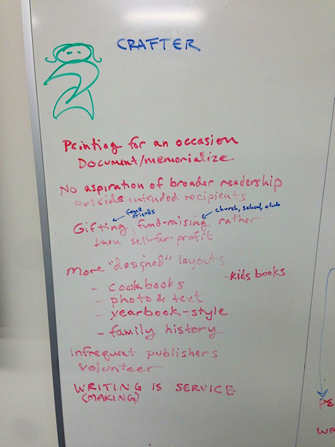
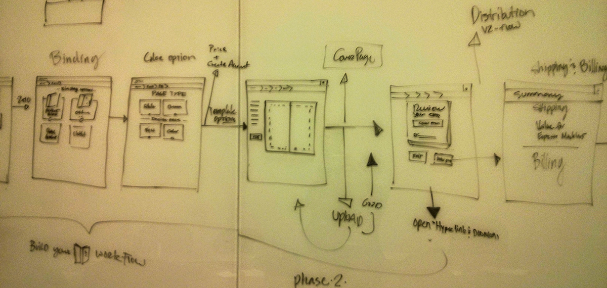
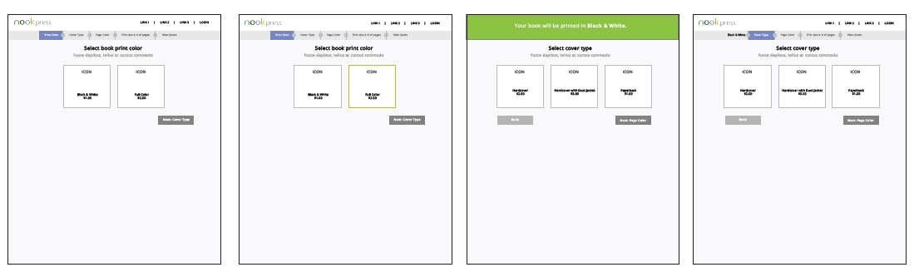
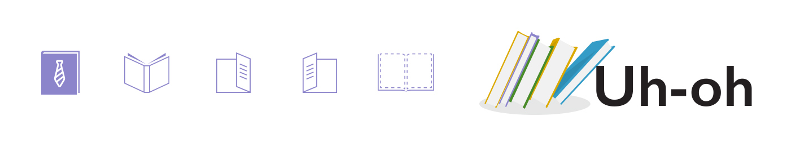
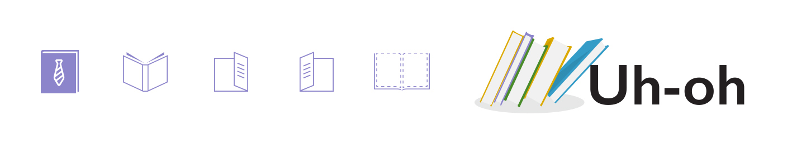

Process
We began generative research to gain a better understanding of how authors were getting their book published, their motivations, challenges, what softwares were used and whether it met their expectations. We used this insight to help in writing user scenarios that guided our sketches and wireframe workflows.
A few rounds of user testing followed before we moved to visual designs. We then worked with engineers to create a live style guide.






Visual Designs
A linear workflow with big and bold elements was designed to walk users through the process of building their books and getting a quick price quote.

 
